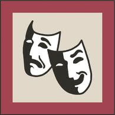
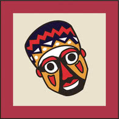
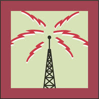
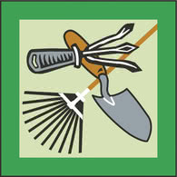

Achievement Badges
Achievement badges give Cubs the opportunity to concentrate on their areas of interest. There are 34 Achievement badges in 4 groups, each with 2 levels. Level 1 badges are green bordered and level 2 badges are red bordered. Cubs don't have to do level 1 before level 2, they can choose which level they'd like to achieve.
Arts and Literature




Masks and Sculpture Level 1 (pdf)
Masks and Sculpture Level 2 (pdf)


Sports and Recreation


Nature, Science and Technology
Animals and Birds Level 1 (pdf)
Animals and Birds Level 2 (pdf)


Codes and Signals Level 1 (pdf)
Codes and Signals Level 2 (pdf)




Information Technology Level 1 (pdf)
Information Technology Level 2 (pdf)


Our World


International Culture Level 1 (pdf)
International Culture Level 2 (pdf)